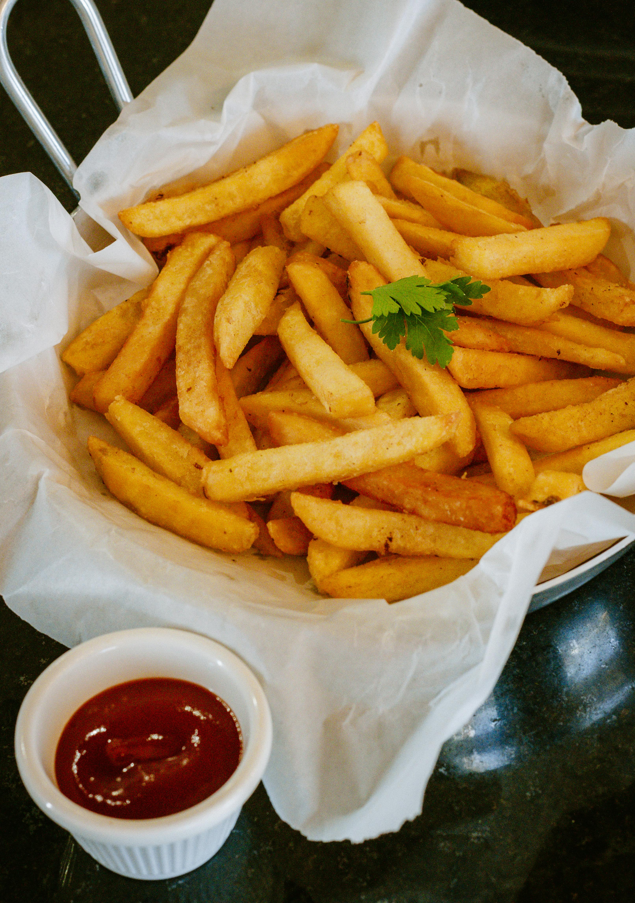

French Fries

Description:
French Fries are arguably the perfect snack or side dish when you are craving something crisp,
salty, savory, and satisfying. In this post I share the easiest way to make perfectly crisp
French fries each time you make. Tossed in a special shaker seasoning, these French fries
make one of the best and super addictive snack. I also share the steps for oven baked and air fryer French fries.
Ingredients:
- Potatoes
- Cooking oil
- Salt
- Black pepper
Steps:
- let's wash our potatoes really well. After they are washed you can peel them if you like.
I don't peel mine. It's just a personal preference.
- Now it is time to cut the potatoes into our fry shape. I have a handy fry cutter that I really like.
It saves a bunch of time, but you can certainly just use a knife.
- Next we place our potatoes cuts into a large bowl with really cold water. Make sure to add a couple
of tsp. of salt as well. Why do we do this? This process helps to remove that starch from those
potatoes, resulting in a much tastier french fry. We want to soak them for about 20 minutes.
- While our potatoes are soaking let's go ahead and get our oil started. I am using a deep fryer,
which I really like, however a pot and candy thermometer will work just fine.
We want to heat our oil for the "first fry" to 320 degrees F. (160 C)
- Next we drain the water from the potatoes and place them on a paper towel.
We use another paper towel to pat them dry. We want them fairly dry,
because water and hot oil do not play nice together. :)
- Now we place a small batch of potatoes into our deep fryer or pot and fry them on a lower heat around
320 degrees F (160 C) for 4 to 6 minutes until they are blonde in color. You will probably need to
wait a few minutes after a few batches and let the oil come back up to temperature.
Once they are done place them on a paper towel to dry, then in freezer bags or tupperware,
so we can freeze them. If you don't have time to freeze them, you can go to the next step.
I like to freeze mine so I can make a ton up front, and then freeze the ones I am not going to eat to fry up later.
- Now once we have frozen our fries, let's turn up our heat to 400 to 425 degrees F. (205 C to 218 C).
Of if you deep fryer doesn't go that high, put it on its highest setting.
Then comes our "Second" fry or "High Heat" fry. Take a batch of fries and place them in the hot oil,
this time we will only be frying them for around a minute or so, until they turn a nice golden brown.
Take them out and place them on a paper towel to drain the excess oil off and salt them fries up! We are done, enjoy!!
Home